<!doctype html>
<html lang="ja">
    
</html>

	<head>

	    
<meta charset="utf-8">
  <meta name="viewport" content="width=device-width,initial-scale=1.0">

<meta NAME=”ROBOTS” CONTENT=”NOINDEX,NOFOLLOW,NOARCHIVE”>


<script src="//code.jquery.com/jquery-2.2.4.min.js"></script>
<script>
//共通パーツ読み込み
  $(function() {
       $("#side").load("side.html");

});
</script>

 <title>宇宙</title>
<link rel="stylesheet" href="style.css">


 	</head>

 	<body>

<div id="wrapper">
<div id="side"></div>
  <div class="right-column"><br><br>
 <table>
	<tbody		<tr>
>
			<td>
			
			</td>
		</tr>
		<tr>
			<td><p>〇宇宙5-1</p>
				

<p class ="gazou2"></p>
<p>今度の宇宙はJK（銃が使える）とJK（4m飛ぶ）</p>

<p class ="gazou2">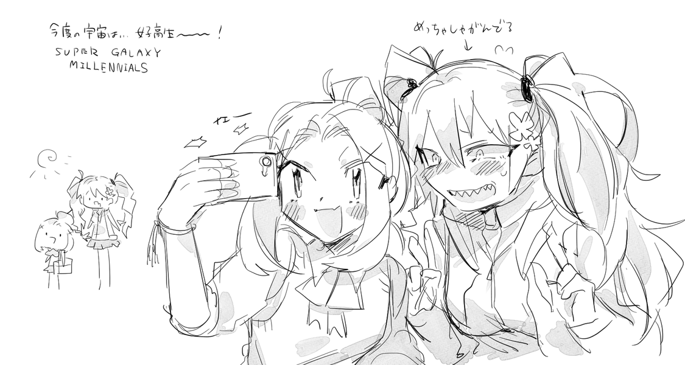</p>
<p class ="gazou2">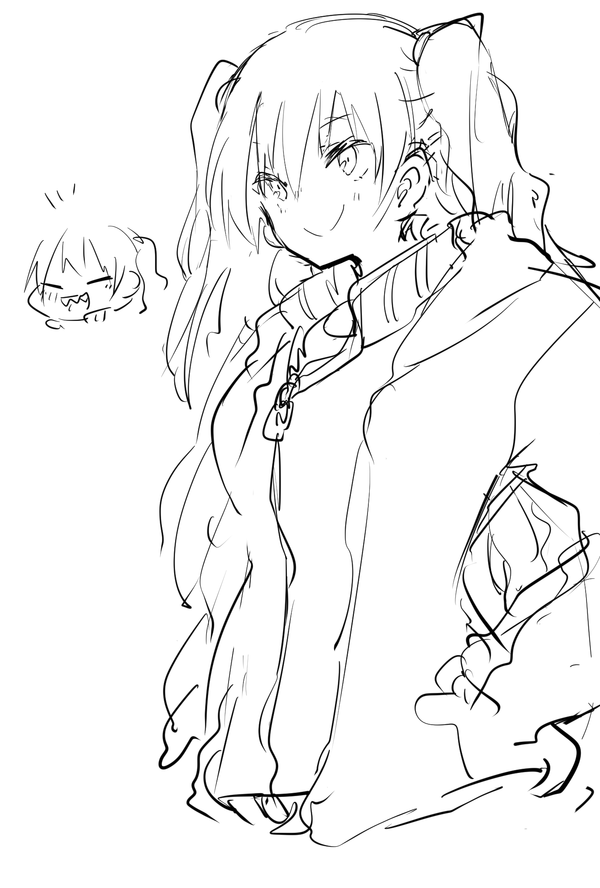</p>

<p class ="gazou2">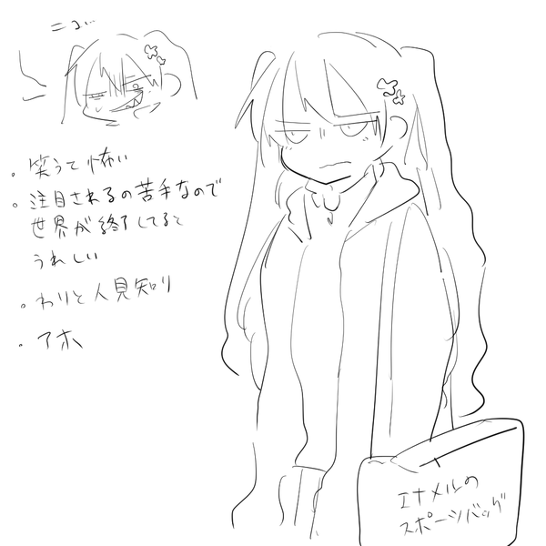</p>
<p>身長186cmある</p>
<p class ="gazou2">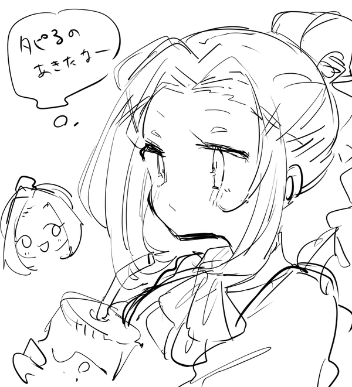</p>
<p>最近飽きた</p>
<p class ="gazou2">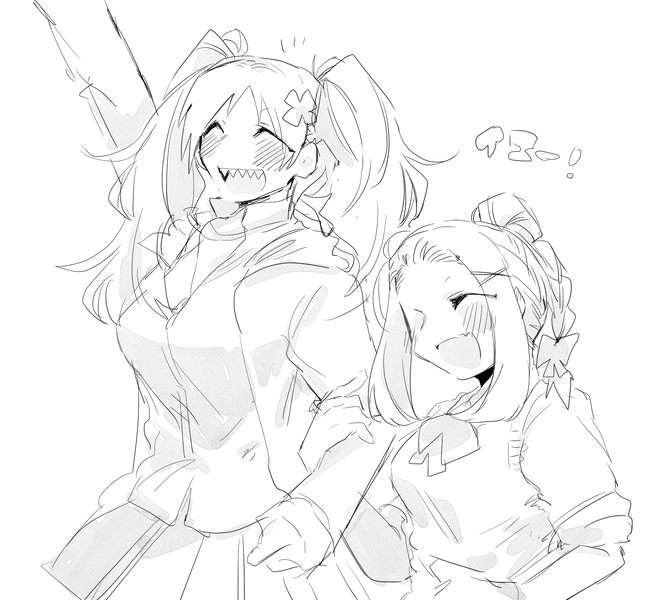</p>

<p class ="gazou2"></p>

<p class ="gazou2">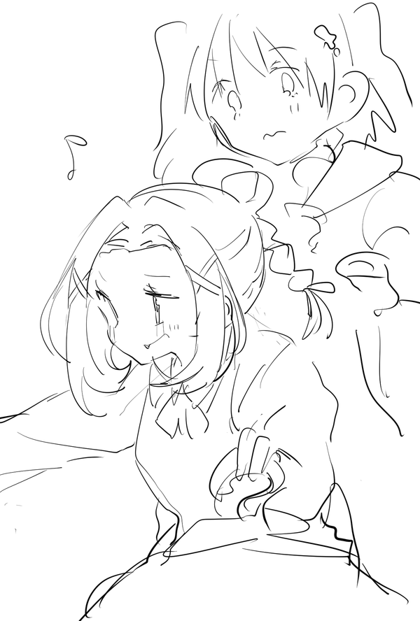</p>
<p>おかいもの</p>

<p class ="gazou2">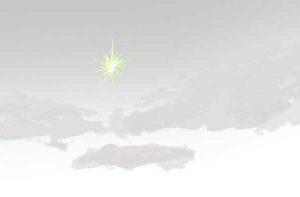</p>
<p>登場人物3、おじさん↑この人　※本編参照

<p class ="gazou2">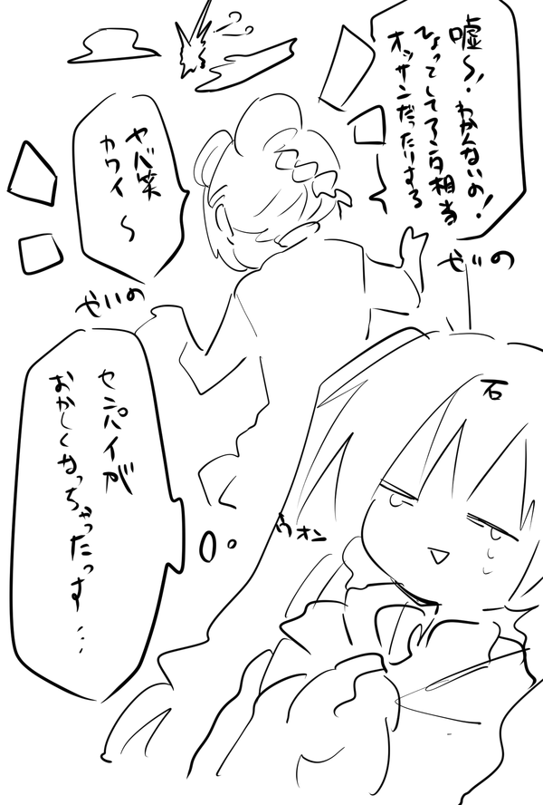</p>
<p>声はセンパイにしか聞こえてなかったらしい</p>

<p class ="gazou2">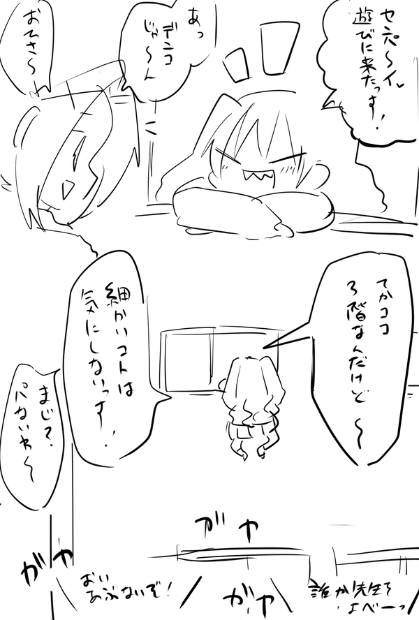</p>
<p class ="gazou2"></p>
<p>二度と会うことはないと言ったあと登場した情けないおじさん</p>

<p class ="gazou2">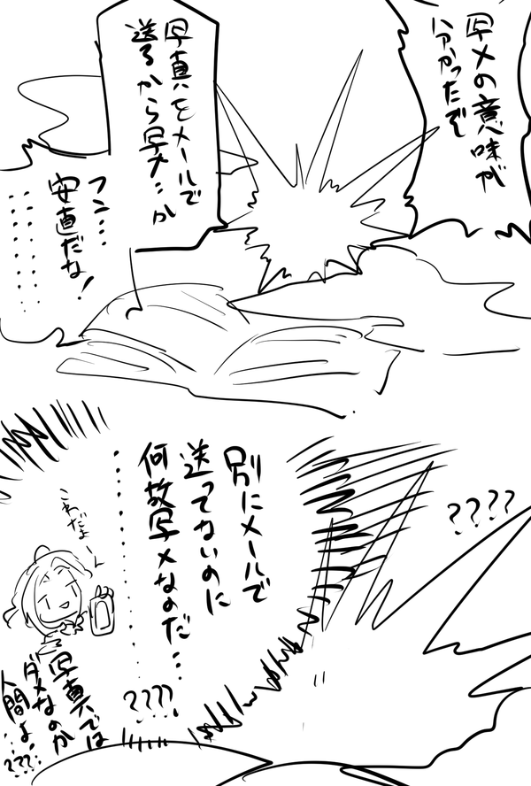</p>

<p class ="gazou2">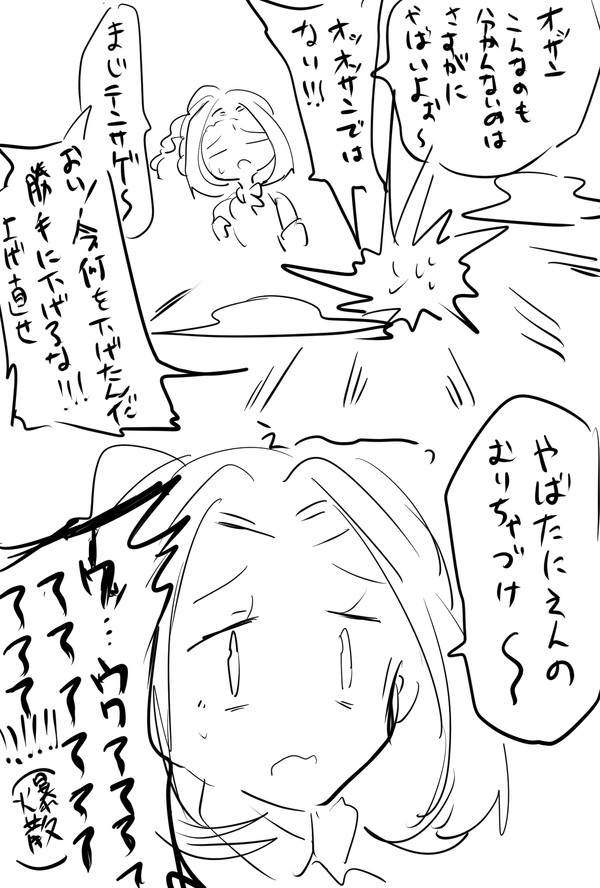</p>

<p class ="gazou2">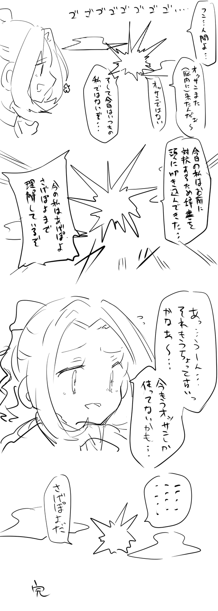</p>

<p class ="gazou2">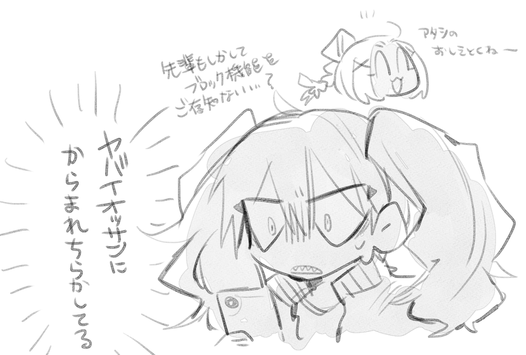</p>

<p class ="gazou2">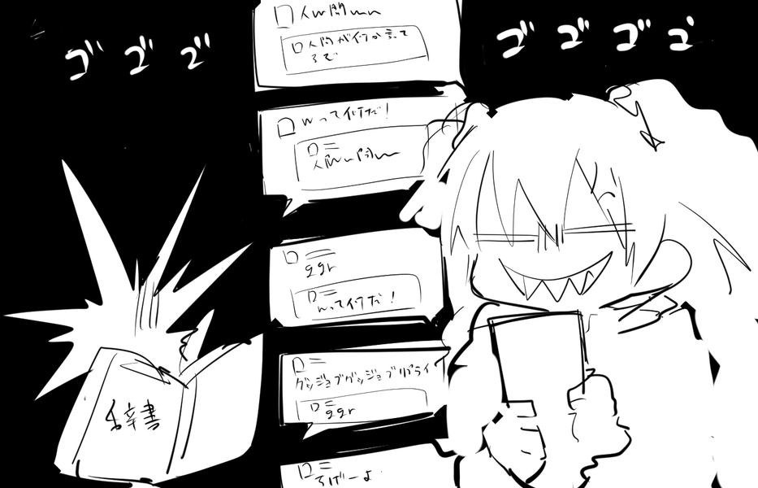</p>
デンコVSおじさん　仁義なきレスバトル
<p class ="gazou2">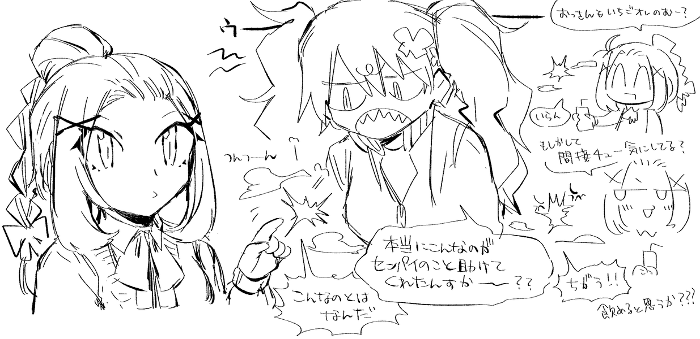</p>

<p class ="gazou2"></p>
			</td>
		</tr>
	</tbody>
</table>


  </div>
</script>
</div>


</body>

 </html>
